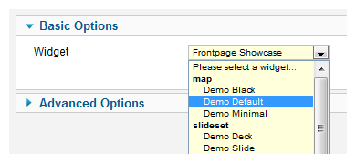
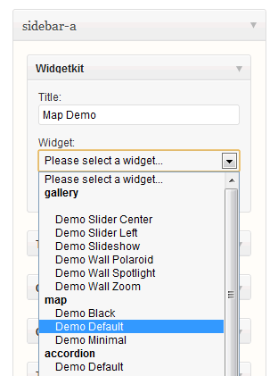

Display Widgets
There are two ways to display a Widgetkit widget on your website. You can either use a shortcode or publish a dedicated Joomla module or WordPress widget displaying any Widgetkit widget.

Shortcode
Shortecodes provide a simple way to use widgets in the content of any article on your site. Just copy and paste them in your articles and you're done! When the article is being displayed on your site the shortcode will be replaced with the widget output.

Joomla Module
You can also use the Widgetkit Joomla module to display a widget on any of your templates module positions. Go to Extensions » Module Manager to launch the Module Manager. You will see there is only one Widgetkit module which is used to display any widget. In the module settings you simply select the widget which you created before in the Widgetkit Manager.

WordPress Widget
Widgetkit also provides a WordPress widget which can be added to any of your theme sidebars. Go to Appearance » Widgets and drag and drop the Widgetkit widget to a sidebar of our choice. Using widget settings you just select the Widgetkit widget you want to display. That's it.